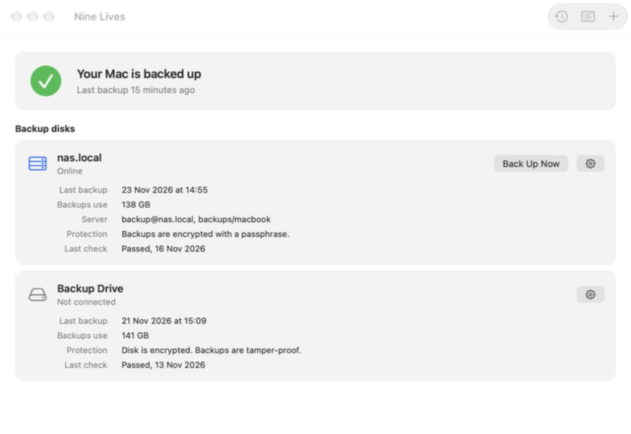
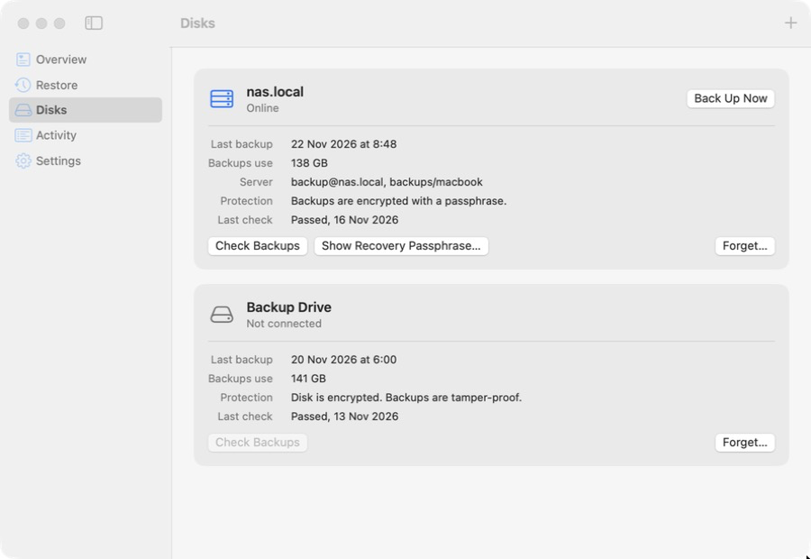
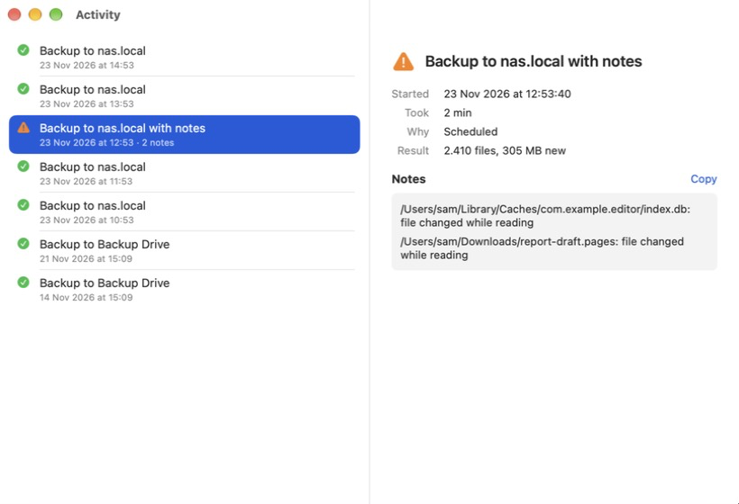

Backups for your Mac that take care of themselves.
Plug in a USB disk, or point Nine Lives at a server. Your files are backed up. If something goes wrong, you get them back.
macOS 15 or later · Apple silicon and Intel · free and open source

Set it up once. Forget about it.
No schedules to learn and no settings to get wrong.
Choose where backups go
Pick a USB disk, or enter a server you reach over SSH, such as a NAS or a rented backup server.
Leave it alone
Backups start when the disk is connected, and run on a schedule for servers. You get a notice when it is done and safe to unplug.
Get files back
Open Restore, browse your files by date, and put them in a folder or back where they were.
Made to be trusted
Backups are only worth something if they work on the day you need them.
Always encrypted
Server backups are encrypted before they leave your Mac. Nine Lives gives you a recovery passphrase to keep somewhere safe.
Checked every month
Nine Lives restores real files from your backups to prove they can be read.
Like Time Machine
Keeps hourly, daily, weekly and monthly versions, and skips caches and other files you do not need.
Several disks
Rotate disks, keep one at the office, and add a server on top. Each has its own backup.
No lock-in
Built on BorgBackup. Your backups stay readable with plain borg, and a HOW TO RESTORE.txt sits next to them.
Free and open
BSD licensed, no account, no tracking. Read every line of it on GitHub.
A look inside
A small window and a menu bar icon. That is all.


Questions
macOS says it cannot verify the app. What do I do?
Nine Lives is not notarized yet. Open it once, then go to System Settings, Privacy & Security, scroll down, click Open Anyway and confirm. Or run xattr -dr com.apple.quarantine "/Applications/Nine Lives.app" in Terminal.
Which file do I download?
Use the arm64 file for Macs with an M-series chip. Use x86_64 for older Intel Macs. Not sure? Apple menu, About This Mac, shows your chip.
Does it back up everything?
It backs up your home folder. To include Mail, Photos and other protected data, give Nine Lives Full Disk Access in System Settings, Privacy & Security. The app guides you through it.
What do I need on my server?
A machine you can reach over SSH with borg installed. Nine Lives creates its own SSH key and shows you the one line to add to the server.
What if I lose my disk and my Mac?
Install Nine Lives on a new Mac, add the disk or server, and enter your recovery passphrase. Or use plain borg, as described in HOW TO RESTORE.txt.
Give your Mac nine lives.
Free, open source, and ready in a minute.